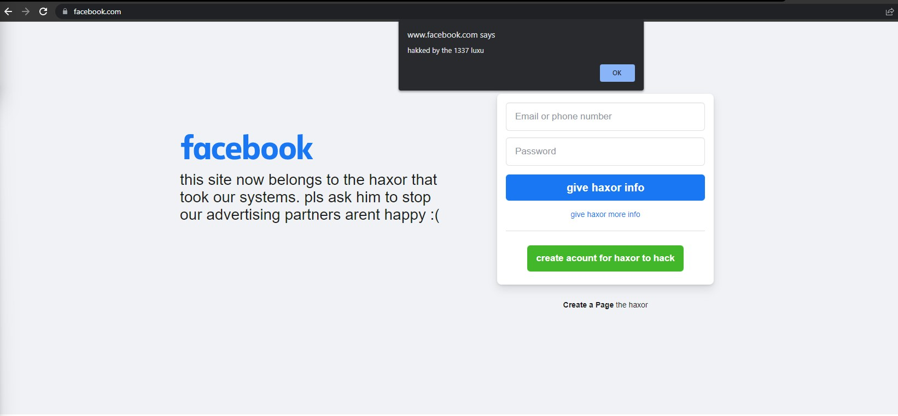
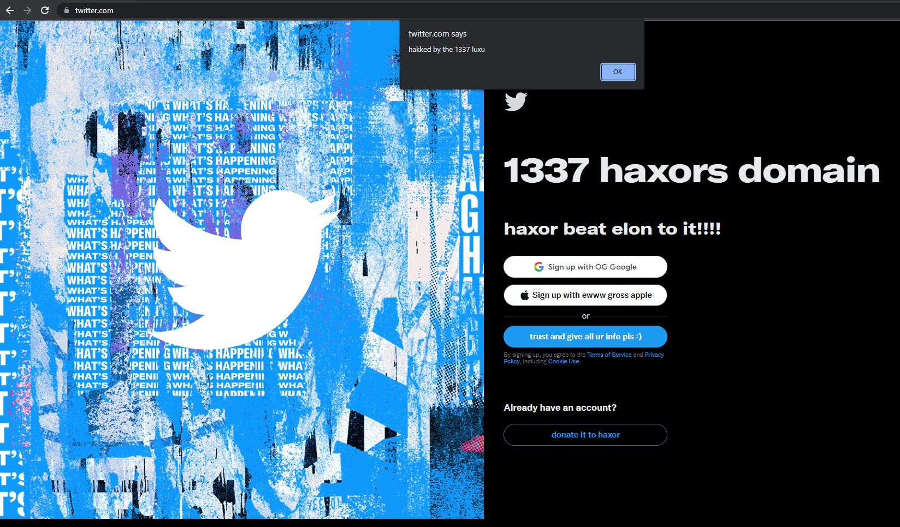
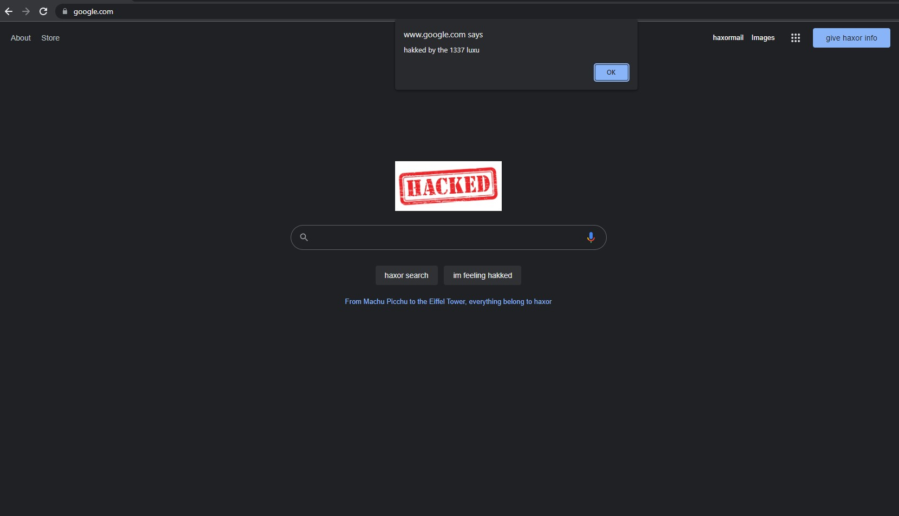
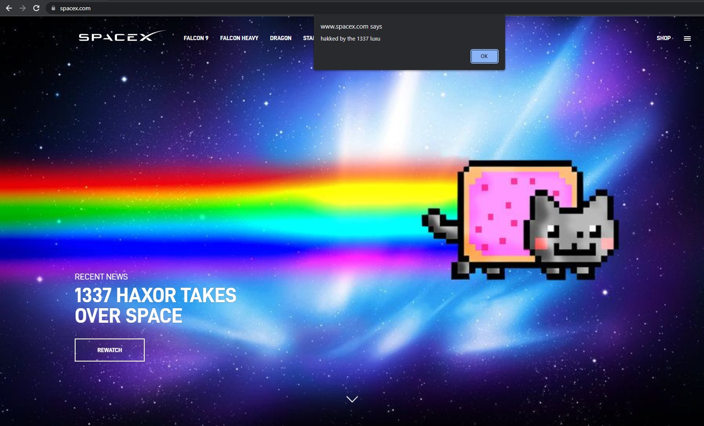

after the haxor found out how to hakk he wanted to finally do what could not be done and has been asked of him many times in the past. he could not get the qustion out of his mind: "Can you please hakk my ex account?". he powered through the codes and finally achieved his goal. he hakked the ex finally... wait no... he hakked all of the exes!
Achievements
lets start with the amazing hacks that will be seen today
- SpaceX
- Launchcode
PROOF
following the hakk of facebook, the haxor found that twitter had become full of doubters and haters. they said that it was all a hoax and it was not the 1337 haxor luxu that did the hakk, but rather some hidden agency or group that controls the world. after getting himself ready through his secret way, haxor luxu sliced through the code and finally hakked twitter. now his haters couldnt hate.
after his big two hakks the haxor found that even though he owned 90% of the interwebz by this point by hakking everyone in the world, that google was still being used to search if the haxor was real. he then did his secret preparation and haxed google by making them search themselves over and over until they gave up to him. now people would not need to search for haxor as he was now the searcher itself
SpaceX
95% the interwebz was at this point under the 1337 haxor luxus control, but he had an obstacle ahead of him that he saw as his next target. spacex would allow him to control not only the interwebz on earth, but every in every universe in the world. following his normal preparations, he let loose a haxor nyancat that spread a virus to all of the spacex and servers in space and now he was almost done and lord of interwebz
Launchcode
99.99999% of the interwebz has been hakked by the 1337 haxor, but one obstacle was in his way that he knew would be the hardest of all. those coders at launchcode that seemed to thwart him off at every time he tried to hax them. this time he used an ultra powerful secret preparation technique and then took 15 weeks of battling with the launchcode coders until finally he broke their main server and could say he owned the interwebz!!! he will never forget this mighty last battle
Secret Revealed…
now that the haxor here has pwnd all of the interwebz he can now say what his secret power is. the whole time it has been… snaks.
every time the haxor eat snak he gets super power to use brain to control interwebz code and manipulate it. cup ramen noodles seems to be the snak that allowed him to get past his enemy launchcode